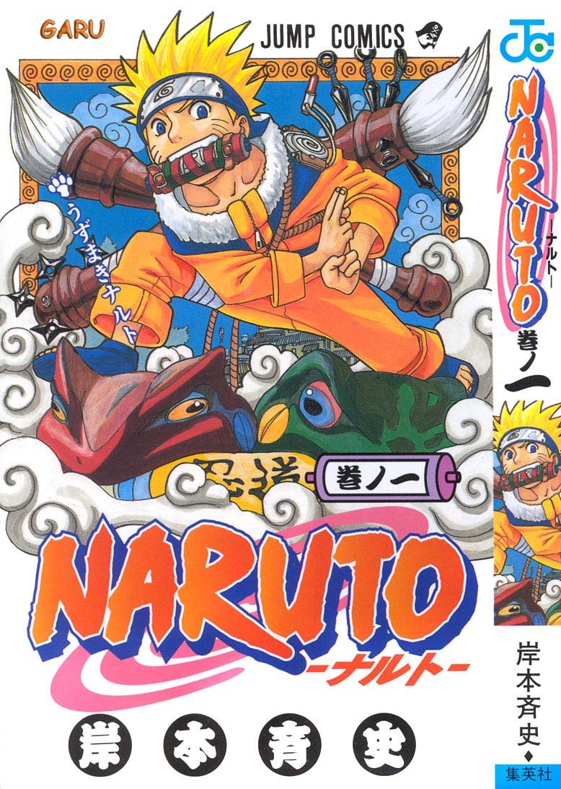
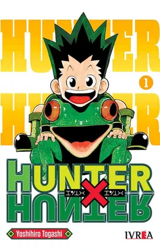

Lista completa de Mangas
-
One Piece

Autor: Eiichirō Oda
Año de Publicación: 1997
Descripción: La serie comienza con la ejecución de Gold Roger, un hombre conocido como “El Rey de los Piratas”, quien justo antes de su muerte, hace mención de su gran tesoro legendario, el One Piece, y que puede ser tomado por quien lo encuentre. Un sinnúmero de piratas zarparon hacia Grand Line, el mar donde se encuentra dicho tesoro, con el objetivo de encontrarlo. ¿Podrá Monkey D. Luffy autoproclamarse como el nuevo Rey de los Piratas?
Leer -
Demon Slayer

Autor: Koyoharu Gotōge
Año de Publicación: 2016
Descripción: La historia se centra en un joven llamado Tanjiro Kamado, un amable joven que vive con su familia en las montañas. Toda su vida cambia radicalmente cuando al regresar a casa y descubre que toda su familia había sido asesinada por un poderoso demonio llamado Muzan Kibutsuji, siendo su hermana menor Nezuko la única sobreviviente. Inesperadamente Tanjiro se ve obligado a convertirse en un cazador de demonios para salvar lo que queda de su familia.
Leer -
Slam Dunk
Autor: Takehiko Inoue
Año de Publicación: 1990
Descripción: Slam Dunk narra la historia de la evolución como jugador de baloncesto, y como persona, de su protagonista Hanamichi Sakuragi, un joven de 15 años, problemático y pandillero con un impresionante registro de cincuenta rechazos amorosos a sus espaldas. Al inicio de la serie Hanamichi no sabe nada de lo que es el deporte o más que nada del baloncesto.
Leer -
Detective Conan
Autor: Gōshō Aoyama
Año de Publicación: 1994
Descripción: El detective juvenil más famoso de Japón, Shinichi Kudo, se encuentra en un parque de atracciones junto a su amiga de la infancia Ran Mouri. Allí, después de resolver un nuevo caso de asesinato, se separa de su amiga y presencia un intercambio sospechoso de dinero. Mientras los espiaba, Shinichi es atacado por la espalda por el compañero del hombre de negro, y le administran un veneno con el fin de matarlo. Sin embargo el veneno tuvo un efecto inesperado: el cuerpo de Shinichi pasó a convertirse en el de un niño de 7 años.
Leer -
Dragon Ball

Autor: Akira Toriyama
Año de Publicación: 1984
Descripción: Su trama describe las aventuras de Goku, un guerrero saiyajin, cuyo fin es proteger a la Tierra de otros seres que quieren conquistarla y exterminar a la humanidad. Conforme transcurre la trama, conoce a otros personajes que le ayudan en este propósito.
Leer -
Shingeki no Kyojin

Autor: Hajime Isayama
Año de Publicación: 2009
Descripción: La trama gira en torno a Eren Jaeger quien después de perder a su madre a manos de los titanes, decide unirse al «Ejército de las murallas» junto a su Mikasa Ackerman y su Armin Arlert con el objetivo de vengar la muerte de su madre y destruir a los titanes.
Leer -
Naruto
Autor: Masashi Kishimoto
Año de Publicación: 1999
Descripción: La obra narra la historia de un ninja adolescente llamado Naruto Uzumaki, quien aspira a convertirse en Hokage, líder de su aldea, con el propósito de ser reconocido como alguien importante dentro de la aldea y entre sus compañeros.
Leer -
Haikyū!!
Autor: Haruichi Furudate
Año de Publicación: 2012
Descripción: La historia empieza cuando Shōyō Hinata, aún siendo un estudiante de primaria, ve un partido de voleibol por la televisión, en el cual ve jugar al conocido "Pequeño Gigante". Desde entonces, desea convertirse en alguien como él, debido a que ambos son bajos de estatura, y comienza a aficionarse por el deporte.
Leer -
Fullmetal Alchemist
Autor: Hiromu Arakawa
Año de Publicación: 2001
Descripción: La historia se centra en los hermanos Edward y Alphonse Elric. Su madre Trisha Elric, muere por una enfermedad terminal, por lo que Edward decide resucitarla a través de la alquimia. Sin embargo, el intento resulta fallido y como consecuencia Alphonse pierde su cuerpo. En un esfuerzo por salvar a su hermano, Edward sacrifica su brazo derecho para sellar el alma de Alphonse en una armadura, perdiendo así su brazo y su pierna. Tras esto, un alquimista llamado Roy Mustang visita a los hermanos y le propone a Edward convertirse en un miembro de las Fuerzas Armadas del Estado y así encontrar una forma de recuperar sus cuerpos.
Leer -
JoJo's Bizarre Adventure
Autor: Hirohiko Araki
Año de Publicación: 1987
Descripción: La trama se desarrolla en torno a la historia del linaje Joestar, una poderosa familia de origen británico destinada a combatir fuerzas sobrenaturales malvadas usando poderes adquiridos; la obra abarca varias generaciones de dicho linaje, las cuales son adaptadas en cada parte poniendo un descendiente como protagonista, empezando con Jonathan en el año 1880.
Leer -
Hunter X Hunter
Autor: Yoshihiro Togashi
Año de Publicación: 1998
Descripción: La historia tiene como protagonista a Gon Freecss, un niño de doce años que desea encontrar a su padre a toda costa, por lo que decide convertirse en «cazador», justo como él, y de alguna forma hallar su paradero.
Leer -
Gintama
Autor: Hideaki Sorachi
Año de Publicación: 2003
Descripción: La obra se centra en las aventuras de un samurái de cabello plateado conocido como Gintoki Sakata, quien ayuda a un adolescente llamado Shinpachi Shimura a salvar a su hermana de un grupo de alienígenas que querían hacerla parte de un burdel. Impresionado con Gintoki, Shinpachi decide convertirse en su aprendiz y trabajar con él como un profesional independiente a fin de poder pagar la renta mensual del alquiler de Gintoki.
Leer